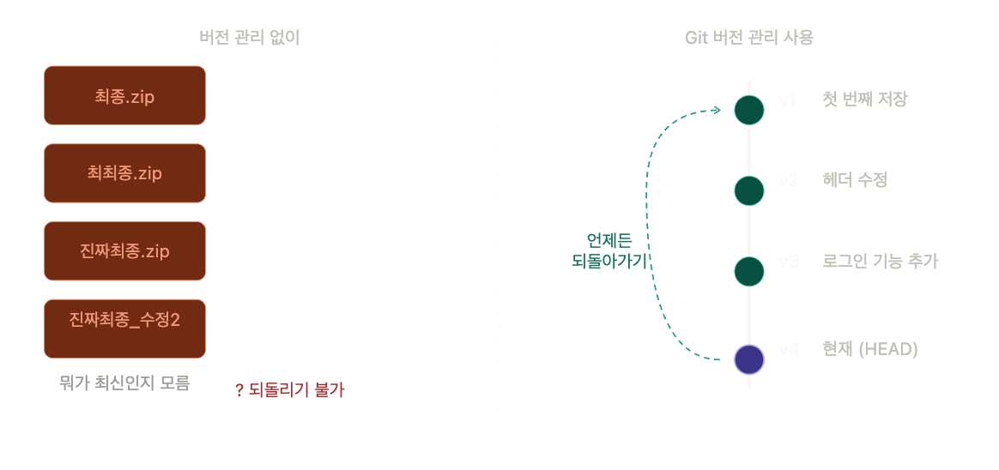
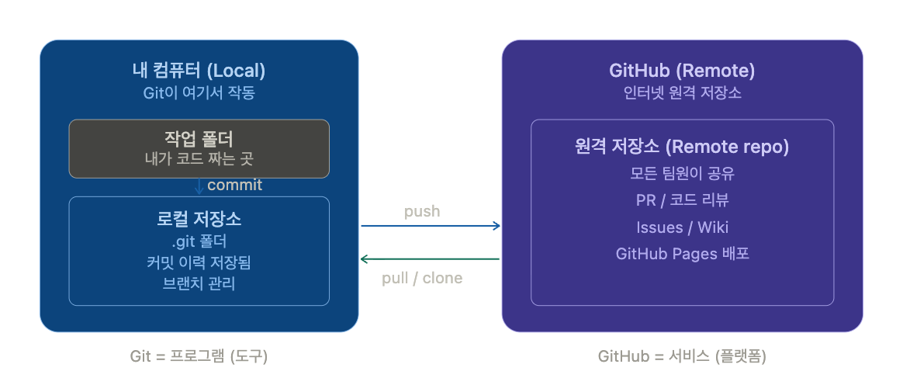
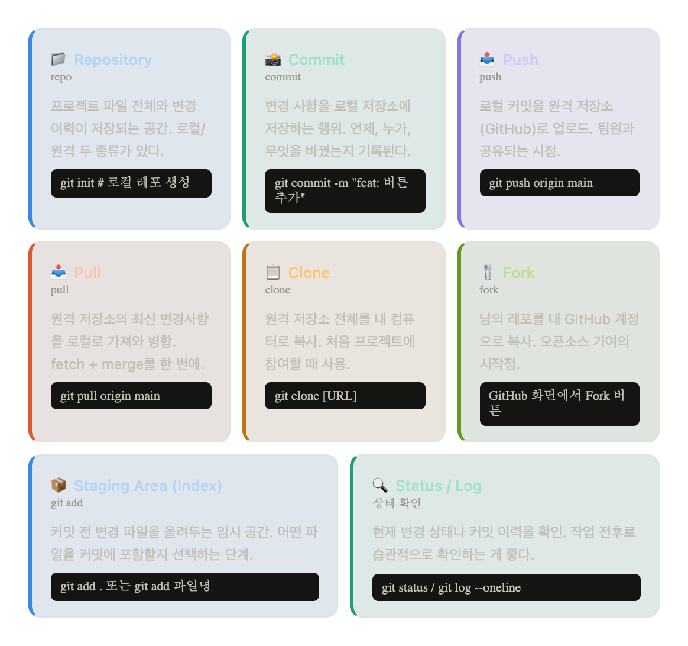
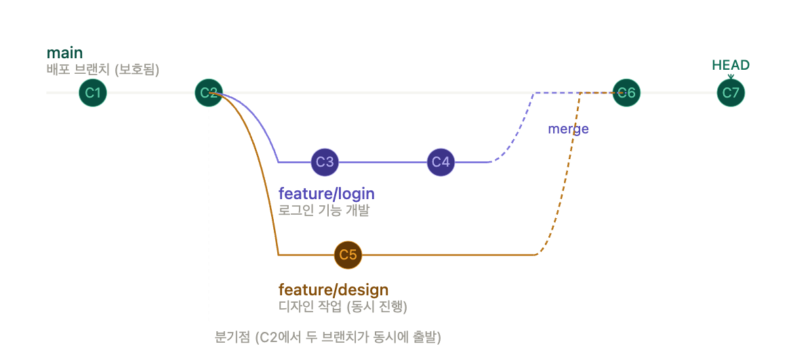
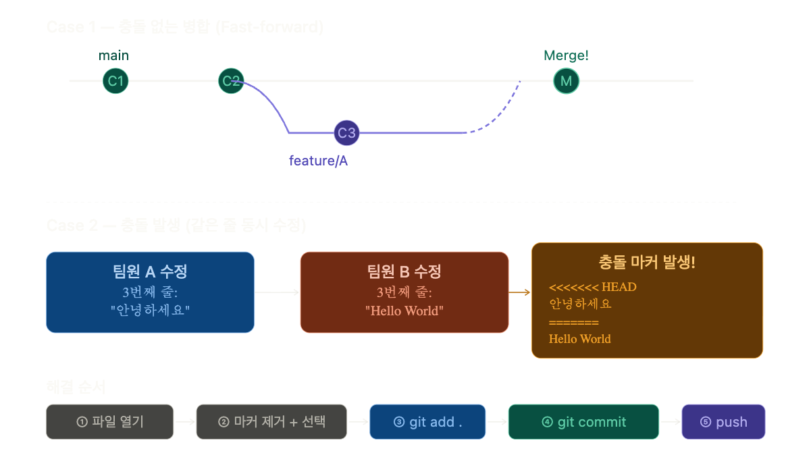
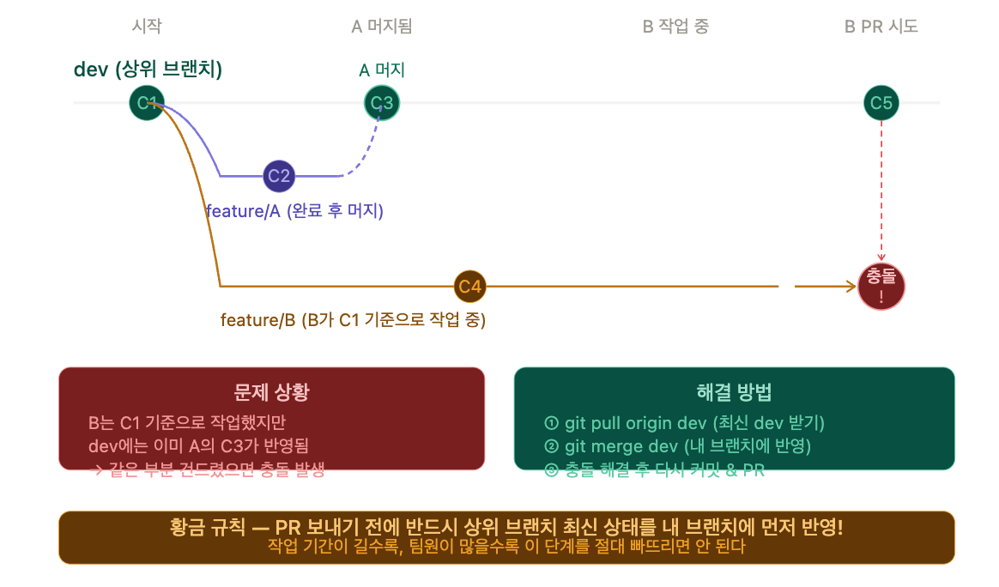
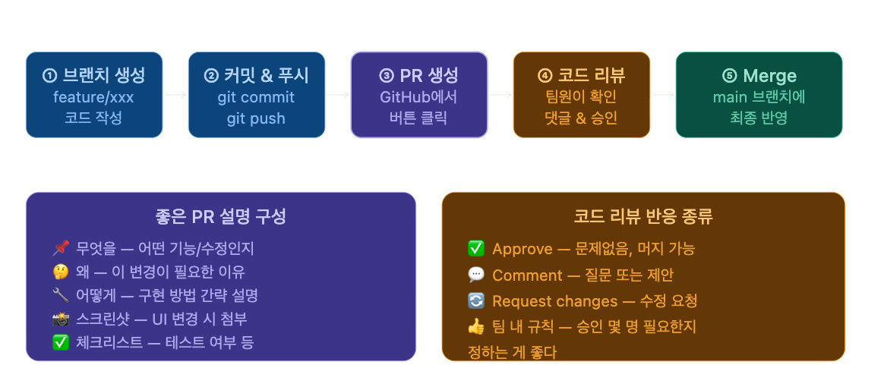
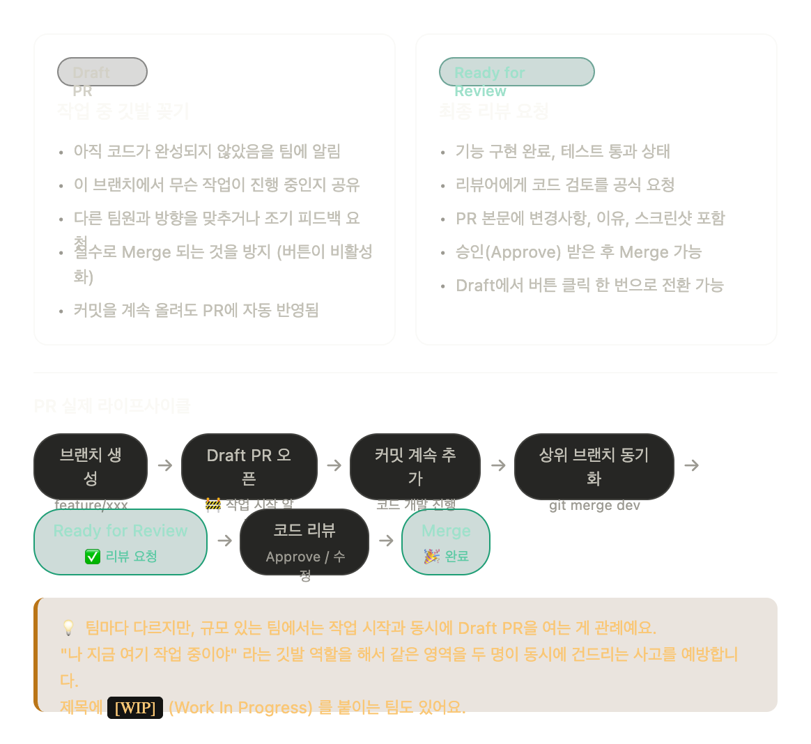
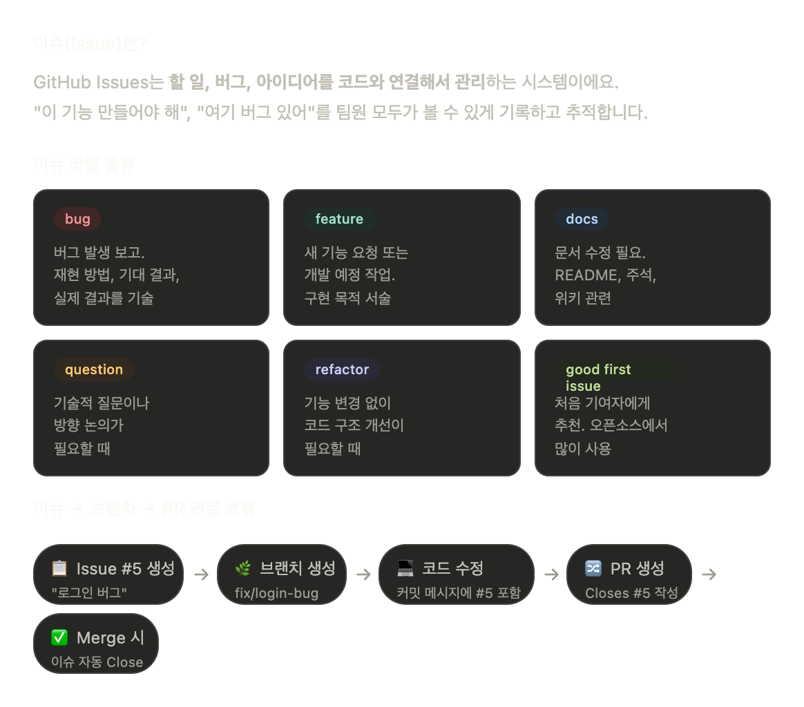

세미콜론
세미콜론📘 1부. Git & GitHub 핵심 개념
💡 이 파트의 목표 : Git과 GitHub가 무엇인지, 어떤 명령어로 무엇을 하는지 이해
1. 버전 관리 시스템이란
🗂 버전 관리의 개념과 필요성
개발하다 보면 이런 상황이 반드시 옵니다.
최종.zip→최최종.zip→진짜최종.zip→진짜진짜최종_수정2.zip
- 팀원이 파일을 덮어써서 내 코드가 사라짐
- 어제까지 잘 되던 게 갑자기 안 됨. 뭘 고쳤는지 모름
버전 관리 시스템(VCS) 은 이 문제를 근본적으로 해결합니다.
코드의 변경 이력 전체를 저장하고, 언제든 과거로 되돌아갈 수 있게 해줍니다.


2. Git vs GitHub
Git vs GitHub 요약
많이들 헷갈리는 개념입니다. 한 문장으로 정리하면:
Git 없이 GitHub은 없고, GitHub 없이도 Git은 쓸 수 있어요.
하지만 협업을 하려면 둘 다 필요합니다.


| 구분 | Git | GitHub |
|---|---|---|
| 종류 | 프로그램 (도구) | 서비스 (플랫폼) |
| 위치 | 내 컴퓨터 | 인터넷 |
| 역할 | 버전 관리 | 저장소 호스팅, PR, 이슈, Pages |
| 없어도 되나? | ❌ 필수 | 로컬만 쓸 땐 없어도 됨 / 타 플랫폼 사용 가능 |
3. 핵심 용어 완전 정복
핵심 용어 정리


기본 작업 흐름 — 항상 이 순서!
작업 → 스테이징(add) → 커밋(commit) → 푸시(push)
# 1. 현재 상태 확인 (습관적으로!)
git status
# 2. 변경 파일을 스테이징
git add . # 전체 파일
git add index.html # 특정 파일만
# 3. 커밋 (로컬 저장)
git commit -m "feat: 헤더 컴포넌트 추가"
# 4. 원격으로 푸시
git push origin main
# 커밋 이력 확인
git log --oneline📖 용어 상세 설명 펼치기
Repository (레포지토리)
프로젝트 파일 전체와 변경 이력이 저장되는 공간. 로컬/원격 두 종류가 있습니다.
git init # 로컬 레포 새로 생성Commit (커밋)
변경 사항을 로컬 저장소에 저장하는 행위. 언제, 누가, 무엇을 바꿨는지 기록됩니다.
git commit -m "feat: 버튼 추가"Push (푸시)
로컬 커밋을 원격 저장소(GitHub)로 업로드. 팀원과 공유되는 시점입니다.
git push origin mainPull (풀)
원격 저장소의 최신 변경사항을 로컬로 가져와 병합. fetch + merge를 한 번에.
git pull origin mainClone (클론)
원격 저장소 전체를 내 컴퓨터로 복사. 처음 프로젝트에 참여할 때 사용합니다.
git clone [URL]Fork (포크)
남의 레포를 내 GitHub 계정으로 복사. 오픈소스 기여의 시작점입니다.
→ GitHub 화면에서 Fork 버튼 클릭
4. 브랜치(Branch) — 평행 우주 작업 공간
브렌치란?
브랜치는 같은 코드베이스에서 독립된 작업 공간을 만드는 것입니다.
feature/login을 개발하는 동안 feature/design도 동시에 진행할 수 있고, 서로 영향을 주지 않아요.
완성되면 main으로 병합합니다.


# 브랜치 목록 확인
git branch # 로컬 브랜치
git branch -a # 원격 포함 전체
# 브랜치 생성 + 이동 (한 번에)
git checkout -b feature/login
git switch -c feature/login # 최신 방식 (권장)
# 브랜치 이동
git switch main
# 브랜치 삭제
git branch -d feature/login # 병합 완료 후 삭제
git branch -D feature/login # 강제 삭제💡 브랜치 네이밍 미리 맛보기 :feature/기능명,fix/버그명,hotfix/긴급수정명형식을 씁니다. 2부에서 자세히 다뤄요.
5. Merge & Conflict
Case 1 — 충돌 없는 병합 (Fast-forward)
충돌은 같은 파일의 같은 줄을 두 사람이 다르게 수정했을 때 발생합니다.
같은 줄이 아니라 서로 다른 파일이나 다른 줄을 수정하면 충돌 없이 Git이 자동으로 합쳐줍니다.
# feature/login 작업 완료 후 main에 병합
git checkout main
git merge feature/loginCase 2 — 충돌 발생 (같은 줄 동시 수정)


# 병합하기
git merge feature/login # 현재 브랜치에 feature/login 병합
# 충돌 발생 시 파일 안에 이런 마커가 생깁니다:
# <<<<<<< HEAD
# 내가 수정한 내용 (현재 브랜치)
# =======
# 상대방이 수정한 내용 (병합하려는 브랜치)
# >>>>>>> feature/login
# → 마커를 직접 제거하고 원하는 코드만 남기면 됩니다
# → VS Code에서는 클릭 한 번으로 선택 가능 (3부에서 실습!)
# 충돌 해결 후
git add .
git commit -m "fix: 충돌 해결"
git push origin mainCase 3 — 상위 브랜치가 변경된 경우
현업에서 가장 자주 마주치는 패턴입니다! 상위브렌치 변경사항을 인지하지 못하고 충돌 확인도 제대로 못하고 그대로 PR 보냈는데 머지되면 개큰 사고가 납니다. 욕을 뒤지게 먹는거에요!
A가 feature/A를 dev에 먼저 머지했는데, B는 그 사실을 모르고 예전 dev 기준으로 계속 작업하다가 PR을 보내면 충돌 폭탄이 됩니다.


# 시나리오: feature/B 작업 중인데 dev 브랜치가 업데이트됨
# ① 작업 중인 내용 임시 보관 (필요한 경우)
git stash
# ② 상위 브랜치 최신화
git checkout dev
git pull origin dev
# ③ 내 브랜치로 돌아와서 dev 반영
git checkout feature/B
git merge dev # dev 변경사항을 내 브랜치에 합치기
# 또는 히스토리를 깔끔하게 유지하고 싶다면
git rebase dev
# ④ 충돌 해결 후
git add .
git commit -m "merge: dev 브랜치 최신 변경사항 반영"
# ⑤ stash 복구
git stash pop
# ⑥ 이제 PR 보내도 안전!
git push origin feature/B🔑 황금 규칙 : PR 보내기 전에 반드시 상위 브랜치 최신 상태를 내 브랜치에 먼저 반영!
작업 기간이 길수록, 팀원이 많을수록 이 단계를 절대 빠뜨리면 안 됩니다.💡 충돌이 무서운 게 아닙니다! 처음 겪으면 당황스러울 수는 있어요. 근데 그냥 원하는 코드를 선택하는 것뿐입니다.
충돌은 일상입니다. 작업할때 매번 내가 언제까지 작업해서 상위 브렌치로 머지 할테니까 그전까지 작업하고 있지 말고 있다가 머지 되면 그때 작업 시작해 할 거 아니잖아요? 물론~ 작업이 겹치는 경우, 그럴수도 있죠. 그래서 너가 늦게해서 내가 늦었네 저쨌네 싸우기도 한다고 합니다.
아무튼 요점은, 상위 브렌치가 훼손되지 않게 개인 브렌치에서 머지하고 push 하는게 중요 한겁니다.
3부에서 직접 해봅니다.
📖 merge vs rebase 차이가 궁금하다면
merge: 병합 커밋이 생기고 히스토리에 분기가 남습니다. 직관적이라 처음엔 이걸 권장.
rebase: 내 커밋들을 상위 브랜치 위에 다시 쌓습니다. 히스토리가 선형으로 깔끔해집니다.
팀 규칙에 따라 선택하고, 처음엔 merge가 더 안전합니다.
6. Pull Request (PR)
PR 이란?
PR은 "내 코드를 메인 브랜치에 합쳐달라고 요청하는 것" 입니다.
하지만 그보다 더 중요한 건 코드 리뷰 문화의 시작점이라는 것이에요.
혼자 다 짠 코드보다 팀원이 검토한 코드가 훨씬 안전합니다.


PR 흐름
① 브랜치 생성 → ② 커밋 & 푸시 → ③ PR 생성 → ④ 코드 리뷰 → ⑤ Merge
# PR 보내기 전 상위 브랜치 최신화
git pull origin main
git checkout feature/login
git merge main
# 준비 완료 후 push
git push origin feature/login
# → GitHub에서 "Compare & pull request" 버튼 클릭
# PR 제목 예시: feat: 로그인 기능 추가
# PR 본문: 무엇을 / 왜 / 어떻게 / 스크린샷 / Closes #이슈번호💡 PR = 코드 리뷰 요청 입니다. GitHub에서 버튼 클릭으로 생성하고, 팀장(리뷰어)이 승인하면 Merge해요. CLI보다 GitHub 웹 화면을 주로 씁니다.
Draft PR


| 구분 | Draft PR | Ready for Review |
|---|---|---|
| 상태 | 🚧 작업 중 | ✅ 리뷰 요청 |
| Merge | 불가 (버튼 비활성) | 가능 |
| 목적 | 작업 영역 선점, 진행 공유 | 코드 검토 요청 |
| 전환 | Ready for Review 버튼 클릭 | Merge 진행 |
# Draft PR 상태에서 계속 작업하며 커밋 & 푸시
git commit -m "wip: 로그인 폼 UI 작업 중"
git push origin feature/login # Draft PR에 자동 반영됨
# 작업 완료 → GitHub에서 "Ready for Review" 버튼 클릭💡 [WIP] (Work In Progress) 를 PR 제목 앞에 붙이는 팀도 있습니다. [WIP] feat: 로그인 기능PR 보내기 전 체크리스트 (습관화 필요!)
- 상위 브랜치 최신 상태 반영했는가? (
git merge dev)
- 내 코드 직접 다시 읽어봤는가? (Self-review)
- PR 제목이 컨벤션에 맞는가? (예:
feat: 로그인 기능 추가)
- PR 본문에 무엇을/왜/어떻게 작성했는가?
- 관련 Issue 번호 연결했는가? (
Closes #5)
7. Issue
이슈(Issue)란?
- GitHub Issues는 할 일, 버그, 아이디어를 코드와 연결해서 관리하는 시스템입니다.
"이 기능 만들어야 해", "여기 버그 있어"를 팀원 모두가 볼 수 있게 기록하고 추적합니다.


이슈 라벨 종류
| 라벨 | 용도 |
|---|---|
bug | 버그 발생 보고. 재현 방법, 기대 결과, 실제 결과 기술 |
feature | 새 기능 요청 또는 개발 예정 작업 |
docs | README, 주석, 위키 등 문서 수정 |
question | 기술적 질문이나 방향 논의 |
refactor | 기능 변경 없이 코드 구조 개선 |
good first issue | 처음 기여자에게 추천. 오픈소스에서 많이 사용 |
이슈 → 브랜치 → PR 연결 흐름
이슈와 PR을 연결하는 가장 중요한 팁 — 커밋 메시지나 PR 본문에 Closes #이슈번호를 쓰면 PR이 Merge될 때 이슈가 자동으로 닫혀요.# 이슈 번호를 커밋 메시지에 포함
git commit -m "fix: 로그인 토큰 만료 오류 수정 (#5)"
# PR 본문에 아래처럼 작성하면 Merge 시 이슈 자동 Close
# Closes #5
# Fixes #5
# Resolves #5
# 이슈 관련 브랜치 네이밍 예시
git switch -c fix/login-bug # 이슈 #5: 로그인 버그
git switch -c feature/signup # 이슈 #7: 회원가입 기능💡 Issue는 GitHub 웹에서 생성합니다.New Issue → 라벨 선택 → 담당자(Assignee) 지정 → 제출
이걸 잘 활용하면 팀 전체의 작업 현황이 한눈에 보입니다.
✅ 1부 완료!
개념을 익혔으니 이제 2부에서 "왜 이렇게 쓰는지" 맥락을 배웁니다.